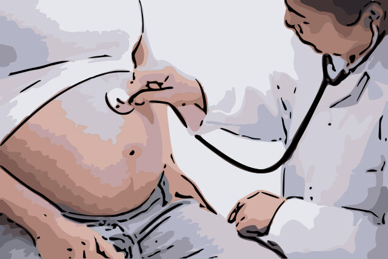

Source of Variation 进化的根本
If you have already look at the process of the natural selection from
the other section, you should know that the preexisting condition to
allow the process to be possible is that there is variation between
individuals of a population. This variation right here is the reason why
natural selection and evolution are possible. So you might think about
how this variation come to exist in the first place. Does it just appear
randomly in your life and you turn into a superhero? The answer is less
exciting because natural source of variation ended before an organism is
even born. Anyways, lets take a look at the three sources of variation!
如果你已经从另一章节中看到了自然选择的过程，你应该知道使这一过程成为可能的前提条件是种群中个体之间的差异。
而变异就是自然选择和进化可能的原因。所以你可能会想，这种变异首先是如何存在的呢？它只是随机出现在你的生活中，你就变成了一个超级英雄吗？
答案没有那么令人兴奋，因为自然变异在生物出生之前就已经结束了。总之，让我们来看看变异的三个来源吧!
Mutation 变异/突变
----Out of all three source of variation, mutation is the most important
and the most special one. In fact, mutation is the only factor that
contribute to the creation of a new characteristic in genes. Think of
mices with different colors, the other two sources of variation can only
further mix the two color together or increase the population of one
color. Mutation, however, can cause a random green color mice to be
born. The reason why this would happen can be summarize into a single
word: accident. Normally, genes in organisms replicate into two
identical genes. That is why you would not look like a completely
different organism when born. However, if a mutation occurs during
combination and replication of genes, the mutated genes may present
something entirely different. This difference may be good or bad which
give the individual certain advantage and disadvantage.
----在所有三个变异来源中，变异是最重要和最特殊的一个。事实上，变异是唯一有助于在基因中创造新特性的因素。想想有不同颜色的老鼠，
其他两个变异源只能进一步将两种颜色混合在一起或增加一种颜色的种群。而突变则可以导致随机的绿色小鼠诞生。之所以会发生这种情况，
可以概括为一个词：意外。通常情况下，生物体内的基因会复制成两个相同的基因。这就是为什么你出生时不会看起来像一个完全不同的生物体。
然而，如果在基因的组合和复制过程中发生突变，突变的基因可能呈现出完全不同的东西。这种差异可能是好的，也可能是坏的，给个人带来某些优势和劣势。
Meiosis 减数分裂
----The term meiosis may sound unfamiliar to you, but it is a very
crucial process for most organisms. It is a quite complicated process,
so if you are interested, you can search up by yourself. I am only going
to briefly introduce it to you here. Meiosis is responsible for creating
new combination of alleles. Allele are basically individual
characteristics in one organism. Almost every single characteristic of
yours relate to one allele. Taking blood type as an example. Your
parents may told you that you have an A, B, O, or AB blood type. One
specific set of allele is responsible for your blood type. Other
characteristics such as hair color, eyes color, and skin color all
relate to one set of allele. Meiosis makes it possible that each
individuals obtain a different combination of characteristics.
----减数分裂这个术语对你来说可能听起来很陌生，但它对大多数生物体来说是一个非常关键的过程。这是一个相当复杂的过程，所以如果你有兴趣，你可以自己去搜索。
我在这里只向你简单介绍一下。减数分裂负责创造新的等位基因的组合。等位基因其实就是一个生物体中的个体特征。你的每一个特征几乎都与一个等位基因有关。
以血型为例。你的父母可能会告诉你，你的血型是A、B、O或AB。一组特定的等位基因会负责你的血型。其他特征，如头发颜色、眼睛颜色和皮肤颜色都与一组等位基因有关。
减数分裂使每个人都有可能获得不同的特征组合。
Sexual Reproduction 有性生殖
----The sexual reproduction is bascially the same thing as the meiosis,
because meiosis is an inevitable result of sexual reproduction. However,
this can be seens as a grand view of increasing variation regardless.
----有性繁殖与减数分裂基本是一回事，因为减数分裂是有性繁殖的必然结果。不过这可以被看作是增加变异的一个宏观上的因素。
